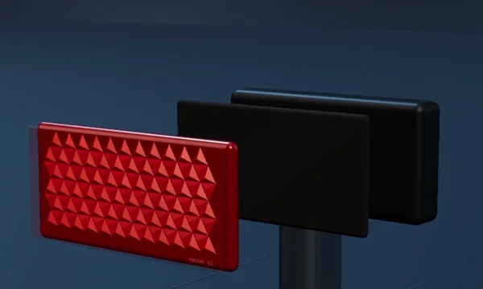
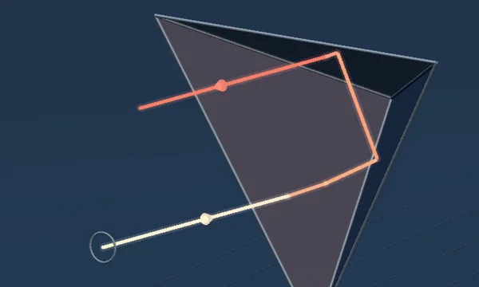
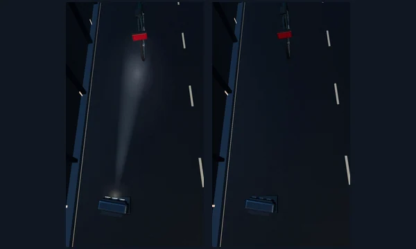

PROJECT 002 / OPTICS
The Light With No Battery
A bicycle reflector looks like it lights up. Move away from the headlight and the glow fades. What happens inside the red plastic?
- Runtime
- 50.00s
- Camera setups
- 18
- Vertical frame
- 9:16

01 / THREE KEY MOMENTS
Follow the light.
From the molded red lens to the path inside one enlarged corner. Tap a frame to play from that shot.
-

0:21.12Open the reflector -

0:37.15See the return path -

0:44.00Switch the lamp off
Full shot list
02 / REFERENCE STUDY
What the frames show.
One source video, decoded and reviewed in order. Measured picture changes are separated from visually confirmed transitions.
REFERENCE / XAC3WL6
How The Ring And Chain Trick Works
Reviewed on Dailymotion, where the listing credits Zack D. Films. The uploader is unverified. The inspection copy excludes audio; this is a picture-only study.
- Frames reviewed
- 1,200
- Source duration
- 40.04s
- Native frame rate
- 29.97
03 / THE PRODUCTION FILE
Built to explain.
Original models, camera motion, narration and sound. The reference study informed the pacing, not the footage.
- 01 / STREET
Keep the lamp on
Change the camera angle first. The same headlight illuminates the reflector, but away from the return direction the lens looks dimmer.
- 02 / BENCH
One corner, three bounces
Trace one accepted ray through three perpendicular faces. It leaves parallel to the incoming path, but in the opposite direction and slightly offset. The timing is slowed for illustration.
- 03 / PAYOFF
Pull the light away
Hold the wide view as the lamp turns off. Bring back the red flash on the original bike. No light source inside the reflector and no road-safety performance claim.
- 04 / DELIVERY
Make it readable on a phone
Roman Urdu phrases animate in place while brief sound cues mark each contact. The MP4 uses standard H.264 picture and AAC stereo audio.
Read the Roman Urdu narration
- 0:00 Ye light jalti dikhti hai. Lekin is mein battery hi nahi.
- 0:04 Ye cycle ka reflector hai. Headlight padi, toh laal chamak uthi.
- 0:09 Ab zara side se dekho. Headlight wohi hai, chamak kam ho gayi.
- 0:14 Aam aaine par tirchhi kiran pade, toh doosri taraf nikal jaati hai.
- 0:20 Is plastic ke peechhe chhote kone hain. Har kone ki teen satahein hain, ek doosre se nabbe degree par.
- 0:27 Kiran andar gayi. Pehli satah se takraayi, phir doosri, phir teesri. Ab rukh bilkul ulta.
- 0:35 Thori si hat kar bhi, kiran headlight ki taraf laut ti hai. Isliye driver ko zyada chamak dikhti hai.
- 0:44 Isne roshni banayi hi nahi. Jo mili, bas wohi wapas kar di.